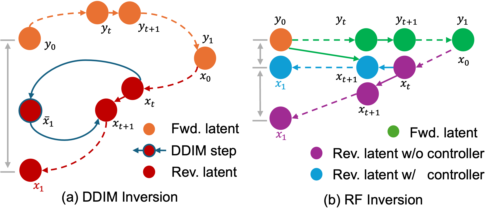
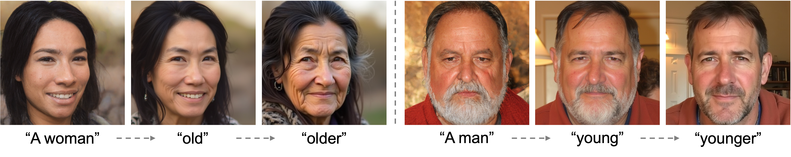
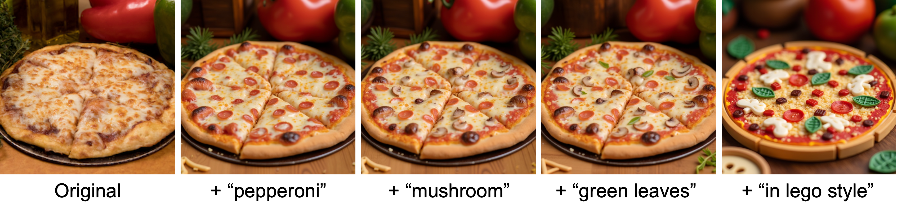

Semantic Image Inversion and Editing using
Stochastic Rectified Differential Equations
Litu Rout1,2 Yujia Chen2 Nataniel Ruiz2
Constantine Caramanis1 Sanjay Shakkottai1Wen-Sheng Chu2
1 The University of Texas at Austin, 2 Google
ICLR 2025
[Paper]
[arXiv]
[Code]
[ComfyUI]
[Diffusers]

Rectified flows for image inversion and editing. Our approach efficiently inverts reference style images in (a) and (b) without requiring text descriptions of the images and applies desired edits based on new prompts (e.g. “a girl” or “a dwarf”). For a reference content image (e.g. a cat in (c) or a face in (d)), it performs semantic image editing e.g. “sleeping cat”) and stylization (e.g. “a photo of a cat in origmai style”) based on prompts, without leaking unwanted content from the reference image. Input images have orange borders.
Abstract
Generative models transform random noise into images; their inversion aims to transform images back to structured noise for recovery and editing. This paper addresses two key tasks: (i) inversion and (ii) editing of a real image using stochastic equivalents of rectified flow models (such as Flux). Although Diffusion Models (DMs) have recently dominated the field of generative modeling for images, their inversion presents faithfulness and editability challenges due to nonlinearities in drift and diffusion. Existing state-of-the-art DM inversion approaches rely on training of additional parameters or test-time optimization of latent variables; both are expensive in practice. Rectified Flows (RFs) offer a promising alternative to diffusion models, yet their inversion has been underexplored. We propose RF inversion using dynamic optimal control derived via a linear quadratic regulator. We prove that the resulting vector field is equivalent to a rectified stochastic differential equation. Additionally, we extend our framework to design a stochastic sampler for Flux. Our inversion method allows for state-of-the-art performance in zero-shot inversion and editing, outperforming prior works in stroke-to-image synthesis and semantic image editing, with large-scale human evaluations confirming user preference.
Contributions
- We present an efficient inversion method for RF models, including Flux, that requires no additional training, latent optimization, prompt tuning, or complex attention processors.
- We develop a new vector field for RF inversion, interpolating between two competing objectives: consistency with a possibly corrupted input image, and consistency with the “true” distribution of clean images (§3.3). We prove that this vector field is equivalent to a rectified SDE that interpolates between the stochastic equivalents of these competing objectives (§3.4). We extend the theoretical results to design a stochastic sampler for Flux.
- We demonstrate the faithfulness and editability of RF inversion across three benchmarks: (i) LSUN-Bedroom, (ii) LSUN-Church, and (iii) SFHQ, on two tasks: stroke-to-image synthesis and image editing. In addition, we provide extensive qualitative results and conduct large-scale human evaluations to assess user preference metrics (§5).
Graphical Model
Graphical model illustrating (a) DDIM inversion and (b) RF inversion. Due to nonlinearities in DM trajectory, the DDIM inverted latent x1 significantly deviates from the original image y0. RF inversion without controller reduces this deviation, resulting in x1. With controller, RF inversion further eliminates the reconstruction error, making x1 nearly identical to y0, which enhances the faithfulness.

Stylization Results
Stylization using a single reference image and various text prompts. Given a reference style image (e.g. “melting golden 3d rendering” at the top) and various text prompts (e.g. “a dwarf in melting golden 3d rendering style”), our method generates images that are consistent with the reference style image and aligned with the given text prompt.

Stylization using a single prompt and various reference style images: “melting golden”, “line drawing”, “3d rendering”, and “wooden sculpture”. Given a style image (e.g. “3d rendering”) and a text prompt (e.g. “face of a boy in 3d rendering style”), our method generates images that are consistent with the reference style image and the text prompt. The standard output from Flux is obtained by disabling our controller, which clearly highlights the importance of the controller.

Cartoonization Results

Cartoonization of a reference image given prompt-based facial expressions in “disney 3d cartoon style”.
Stroke-to-Image Generation Results

LSUN-Bedroom dataset comparing our method with SoTA training-free and training-based editing approaches.

LSUN-Church dataset comparing our method with SoTA training-free and training-based editing approaches.
Semantic Image Editing Results

Adding glasses using prompt “wearing glasses”.

Gender editing: our method smoothly interpolates between “A man” ↔ “A woman”.

Age editing: our method regulates the extent of age editing.

Object insert: text-guided insertion of multiple objects sequentially.
Text-to-Image Generation
T2I generation using rectified SDE (22) for different number of discretization steps marked along the X-axis. Our stochastic equivalent sampler FluxSDE generates samples visually comparable to FluxODE at different levels of discretization.

Additional qualitative results on T2I generation for 100 steps of discretization. This verifies the correctness of the optimal vector field derived in §3 of the main paper and in Appendix A. FluxSDE has the same marginals as the deterministic sampler Flux, but follows a stochastic path as discussed in §3.

Content-Style Composition with RF-Inversion+LoRA

Compatibility of our method with LoRA for content-style composition. The generated image preserves the identity of the reference content while adhering to the desired style.
BibTex
@inproceedings{rout2025semantic,
title={Semantic Image Inversion and Editing using Rectified Stochastic Differential Equations},
author={Rout, L and Chen, Y and Ruiz, N and Caramanis, C and Shakkottai, S and Chu, W},
booktitle={The Thirteenth International Conference on Learning Representations},
year={2025}
url={https://openreview.net/forum?id=Hu0FSOSEyS}
}
Acknowledgements:
This research has been supported by NSF Grant 2019844, a Google research collaboration award, and the UT Austin Machine Learning Lab.